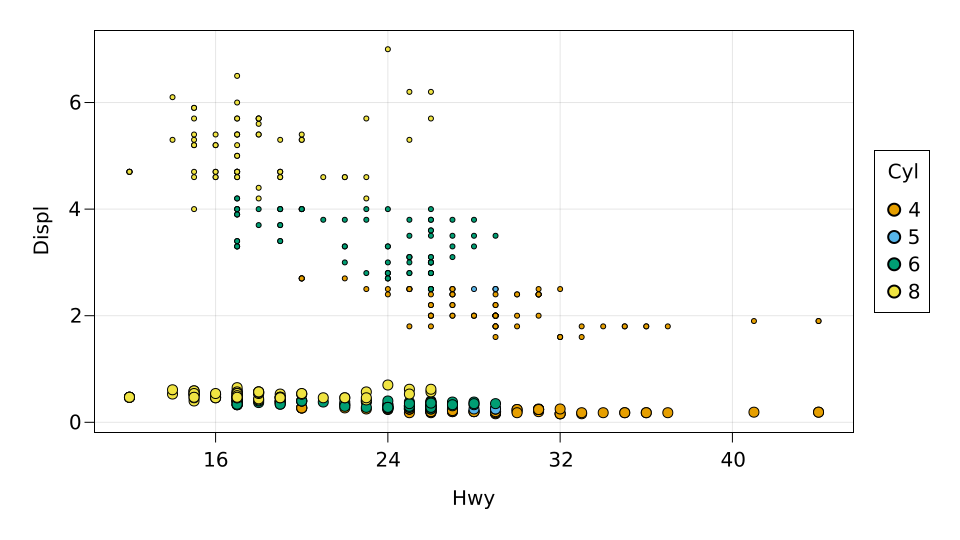

Internals
AlgebraOfGraphics is based on contexts, which can be extended. A context, together with a named tuple (used for x, y axes or attributes in the plot) forms a Style. Each Style can actually encode many traces, encoded as a list of NamedTuple => Style pairs, accessible using pairs(st::Style).
Contexts
The DataContext is invoked with data(df), where df respects the Tables.jl interface.
using RDatasets: dataset
using AlgebraOfGraphics
mpg = dataset("ggplot2", "mpg")
t = data(mpg)
st = style(:Cyl, color = :Year => categorical)
pairs(t * st)2-element Array{Pair{NamedTuple{(:color,),Tuple{NamedDims.NamedDimsArray{(:Year,),CategoricalArrays.CategoricalValue{Int32,UInt32},1,CategoricalArrays.CategoricalArray{Int32,1,UInt32,Int32,CategoricalArrays.CategoricalValue{Int32,UInt32},Union{}}}}},AlgebraOfGraphics.Style},1}:
(color = [1999],) => Style with entries (Symbol("1"),)
(color = [2008],) => Style with entries (Symbol("1"),)In the dims(i) context, all variables in style are sliced along the i-th dimension. The resulting arrays of arrays broadcasted to a common shape, and each "inner array" corresponds to a separate trace. The syntax dims exists to allow setting discrete attributes variables that only vary with one of the dimensions.
d = dims(1) * style(rand(5, 3, 2), rand(5, 3), color = dims(2))
pairs(d)6-element Array{Pair{NamedTuple{(:color,),Tuple{Int64}},AlgebraOfGraphics.Style},1}:
(color = 1,) => Style with entries (Symbol("1"), Symbol("2"))
(color = 2,) => Style with entries (Symbol("1"), Symbol("2"))
(color = 3,) => Style with entries (Symbol("1"), Symbol("2"))
(color = 1,) => Style with entries (Symbol("1"), Symbol("2"))
(color = 2,) => Style with entries (Symbol("1"), Symbol("2"))
(color = 3,) => Style with entries (Symbol("1"), Symbol("2"))Combining styles and contexts together
All outputs of style, data, and dims inherit can be combined using + (adding a new layer), or * (merge information in existing layer).
using AbstractPlotting, CairoMakie
mpg1 = copy(mpg)
mpg1.Displ = mpg.Displ .* 0.1
ts = data(mpg) * spec(markersize = 5) + data(mpg1) * spec(markersize=10)
sl = ts * style(:Hwy, :Displ, color = :Cyl => categorical)AlgebraOfGraphics.AlgebraicList{AlgebraOfGraphics.Spec{Any}}(AlgebraOfGraphics.Spec{Any}[AlgebraOfGraphics.Spec{Any}(, NamedTuple(), Style with entries (Symbol("1"), Symbol("2")), (markersize = 5,)), AlgebraOfGraphics.Spec{Any}(, NamedTuple(), Style with entries (Symbol("1"), Symbol("2")), (markersize = 10,))])The result can then be plotted using the draw function:
sl * spec(Scatter) |> draw
Implementing a new context
To implement a new context, one can overload:
AlgebraOfGraphics._merge(c::MyContext, s1::Style, s2::Style), to allow applyingstyletoMyContext,AlgebraOfGraphics._pairs(c::MyContext, s::Style), which must iteratesgroup::NamedTuple => style::Stylepairs.
See example implementation in the context file.
This page was generated using Literate.jl.